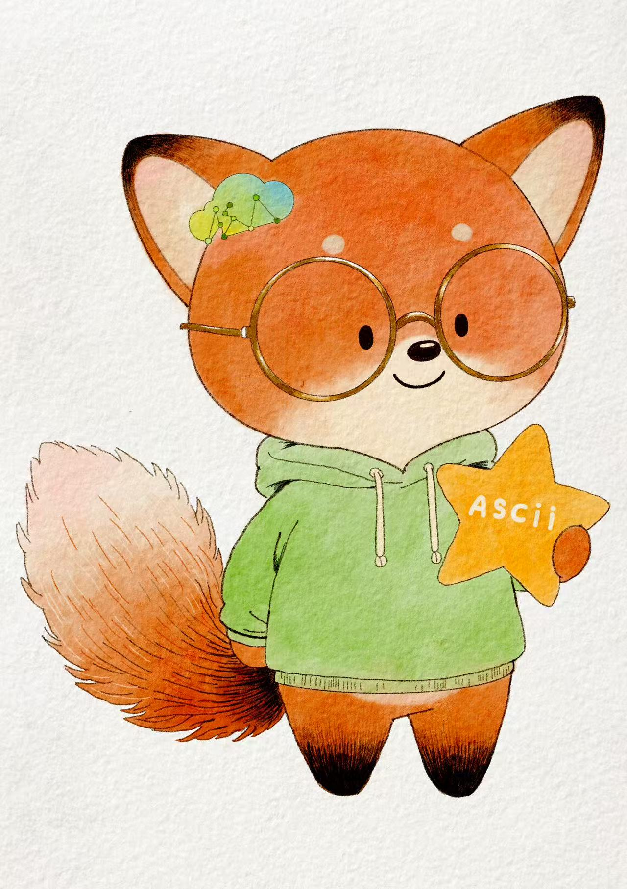

北京市海淀区树村路19号
songchuancheng[at]iie.ac.cn

宋传承，中国科学院信息工程研究所博士研究生，导师曹亚男研究员（国家级青年人才）。研究方向聚焦可信图智能，包括图基础模型、图异常检测、信息内容安全、复杂网络分析等，面向国家网络空间安全治理重大需求，在舆情治理、态势感知等安全场景发挥作用，发表多篇CCF-A、SCI论文，入选中国科协青托博士生计划。获省优秀毕业生、博士一等奖学金、斯坦福大学访学全额奖学金等荣誉近30项。
High-Frequency Also Lies: Evidential Uncertainty-Aware Spectral Graph Anomaly Detection
(under review)
Breaking One-size-fits-all: Revisiting Out-of-Distribution Detection on Graphs under Diverse Distribution Shifts
Chuancheng Song, Hanyang Shen, Yan Dong, Xixun Lin, Yanmin Shang, Yanan Cao.
AAAI Conference on Artificial Intelligence (AAAI 2026)
UniFORM: Towards Unified Framework for Anomaly Detection on Graphs
Chuancheng Song, Xixun Lin, Hanyang Shen, Yanmin Shang, Yanan Cao.
AAAI Conference on Artificial Intelligence (AAAI 2025, Oral Presentation)
Task-level relations modelling for graph meta-learning
Yuchen Zhou, Yanan Cao, Yanmin Shang, Chuan Zhou, Chuancheng Song, Fengzhao Shi, Qian Li.
IEEE International Conference on Data Mining (ICDM 2022)
A feature tensor-based epileptic detection model based on improved edge removal approach for directed brain networks
Chuancheng Song, Youliang Huo, Junkai Ma, Weiwei Ding, Liye Wang, Jiafei Dai, Liya Huang..
Front. Neurosci.
Research on the Node Importance of a Weighted Network Based on the K-Order Propagation Number Algorithm
Pingchuan Tang, Chuancheng Song, Weiwei Ding, Junkai Ma, Jun Dong, Liya Huang.
Entropy (Highly Cited Paper)